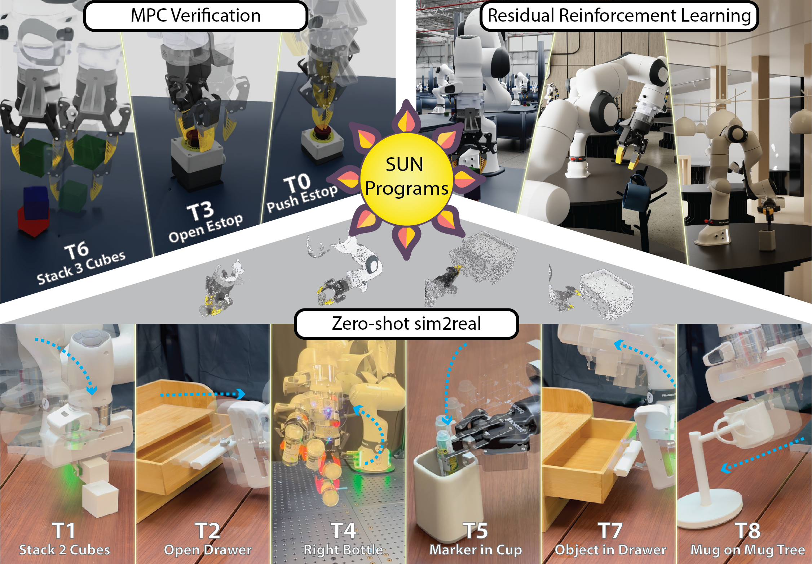
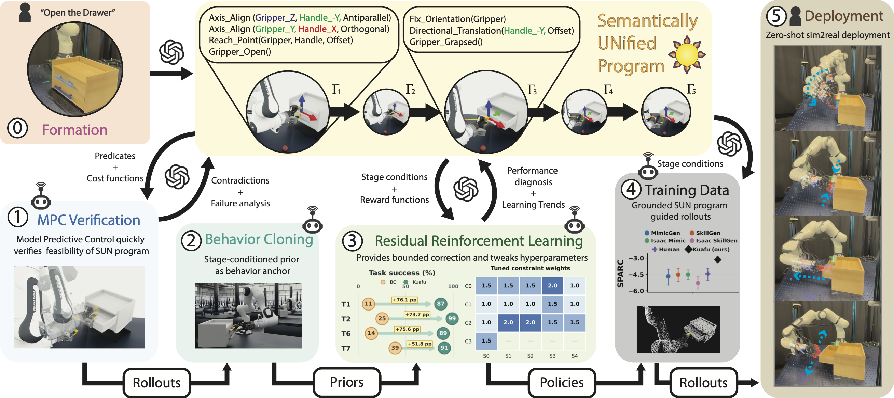
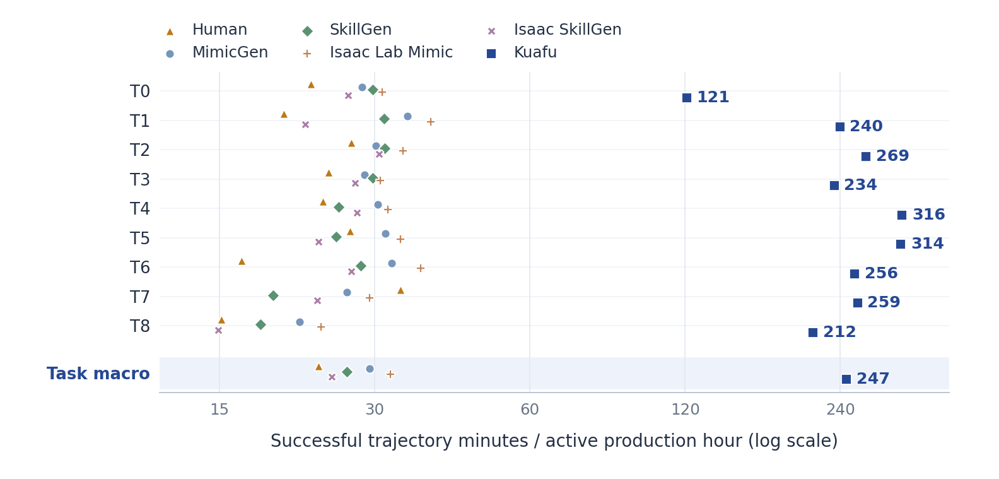
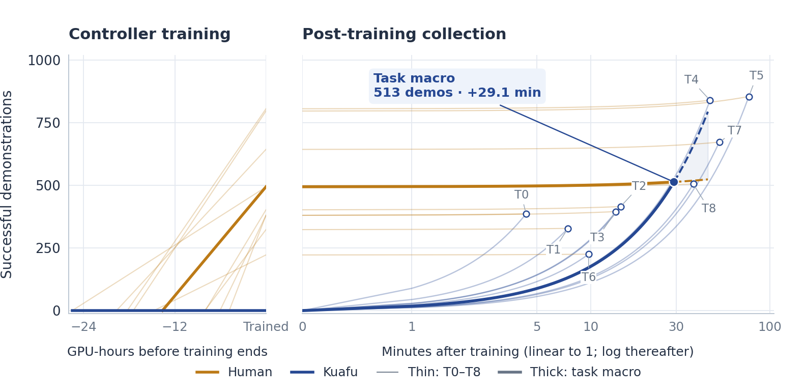

ROBOT LEARNING / UCLA / 2026
SUN: Agentic Robot Policy Learning
with Persistent Task Programs
The Kuafu harness connects language and object videos to multi-stage robot manipulation, combining model predictive control, imitation learning, reinforcement learning, and sim-to-real deployment of visual policies.

FULL PROJECT VIDEO / 2:11
SUN / Kuafu in action.
Complete original project video, from program-guided manipulation in simulation to physical robot deployment. Audio is available through the player controls.
The problem
A multi-stage manipulation task has to mean the same thing to a planner, a reward function, and a learned policy. Rewriting its objectives at each step can lose the geometric relationships that make a task succeed.
SUN Programs retain those relationships as typed executable task specifications. The same specification produces optimal-control objectives, satisfaction predicates, and learning rewards. Kuafu equips a foundation-model agent with the tools to form, verify, repair, and learn from these programs.
What I built
- The Kuafu harness: an agentic workflow that connects object videos and language instructions to stage-based task programs, MPC verification, and policy learning.
- Diagnostic repair and learning: feedback from closed-loop verification guides program repair; training diagnostics guide reward-weight and correction-strength calibration.
- Demonstration collection: automated collection with learned controllers, plus a web-based human-teleoperation application using AgileX PIKA task-space controls in simulation.
- Visual-policy learning and deployment: RGB, point-cloud, and multi-task VLA training on generated data; a DP3 pipeline for zero-shot deployment on Franka FR3 and Kinova Gen3.
This is collaborative research. I am a co-first author with Zhi Li; the contributions above describe my work within the team.
How the system fits together
Specify
Ground task stages in geometric relations.
Verify
Use MPC feedback to repair task programs.
Learn
Combine behavior cloning and bounded residual RL.
Deploy
Train visual policies on generated demonstrations.

Results, with their evaluation scope
| Result | What was measured |
|---|---|
| 95.6% | Final program formation-and-verification success: 43 of 45 independent runs, including diagnostic repair. |
| 82.03% | Task-macro success of the primary privileged controller across nine simulated manipulation tasks. The reported three-run mean is 79.43%. |
| 10.57× | Successful demonstration throughput relative to human teleoperation, after controller training. Including controller preparation, mean break-even is 35 demonstrations for cost and 513 for time. |
| 46.02% | DP3 mean success on nine simulated tasks with 500 successful demonstrations per task; SkillGen with the same learner achieves 22.44%, a 23.6 percentage-point gap after rounding. |
| 34.0% | Physical deployment success over 106 trials, across six tasks and three robot–gripper configurations. DP3 is trained on 1,000 simulated trajectories per task. |
Simulation and hardware results measure different settings. Physical deployment uses no real-world demonstrations or fine-tuning; the 82.03% simulation result is not a hardware success rate.
On physical hardware
A Franka FR3 opens a drawer and places a cube inside using a policy trained in simulation. This excerpt retains the original demonstration’s 5× playback speed.
Turning controllers into data
The learned controllers also act as demonstration generators for downstream visual policies. The throughput advantage is measured after controller training; the break-even analysis accounts for preparation time.

